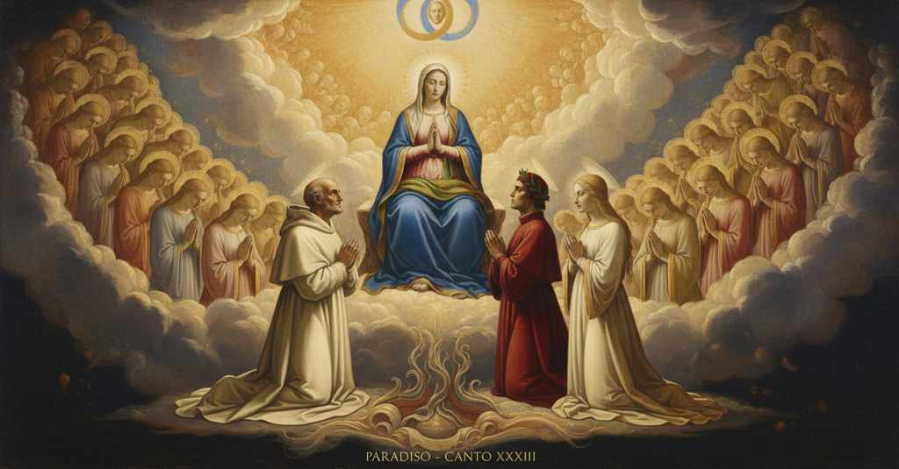
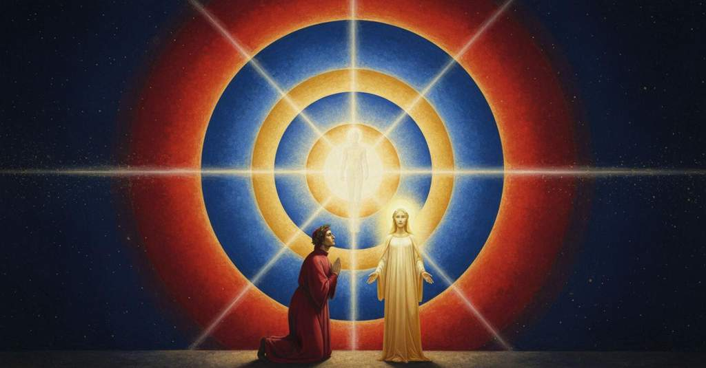

Paradiso — Canto 33

Guided by St. Bernard's prayer to Mary, Dante received the ultimate vision of God, beholding the Trinity and Incarnation until his will was perfectly aligned with divine Love. 聖ベルナルドゥスの祈りにより、語り手は神を直視して三位一体の神秘を悟り、その意志は宇宙を動かす神の愛と完全に調和した。
1
«Vergine Madre, figlia del tuo figlio,
«Virgin Mother, daughter of your son,
「処女なる母よ、御子（みこ）の娘よ、
2
umile e alta più che creatura,
humble and high more than any creature,
謙（へりくだ）りて気高く、いかなる被造物にも勝り、
3
termine fisso d’etterno consiglio,
fixed term of eternal counsel,
永遠の摂理の定まりし極みよ、
4
tu se’ colei che l’umana natura
you are she who human nature
あなたこそは人の本性を
5
nobilitasti sì, che ’l suo fattore
so ennobled, that its maker
かくも気高くなし給い、その創造主も
6
non disdegnò di farsi sua fattura.
did not disdain to become its making.
自らその被造物となるを厭（いと）わなかった。
7
Nel ventre tuo si raccese l’amore,
In your womb was rekindled the love,
あなたの胎内にて愛は再び燃え上がり、
8
per lo cui caldo ne l’etterna pace
by whose warmth in the eternal peace
その温かさによって永遠の平和のうちに
9
così è germinato questo fiore.
this flower has so been germinated.
かくしてこの花は芽吹きました。
10
Qui se’ a noi meridïana face
Here you are to us a midday torch
ここにては我らにとって真昼の松明（たいまつ）
11
di caritate, e giuso, intra ’ mortali,
of charity, and down below, among mortals,
なる慈愛の、そして地上にては、死すべき者らの間にあっては、
12
se’ di speranza fontana vivace.
you are of hope a living fount.
生ける希望の泉です。
13
Donna, se’ tanto grande e tanto vali,
Lady, you are so great and so worthy,
貴婦人よ、あなたはかくも偉大で、かくも力あり、
14
che qual vuol grazia e a te non ricorre,
that whoever wants grace and to you does not have recourse,
恩寵を望みながらあなたに頼らぬ者は、
15
sua disïanza vuol volar sanz’ ali.
his desire wants to fly without wings.
その願いは翼なくして飛ぼうとするようなもの。
16
La tua benignità non pur soccorre
Your benignity not only succors
あなたの慈悲はただ乞う者を
17
a chi domanda, ma molte fïate
him who asks, but many times
助けるのみならず、幾度も
18
liberamente al dimandar precorre.
freely anticipates the asking.
自ら進んで願いに先んじます。
19
In te misericordia, in te pietate,
In you mercy, in you pity,
あなたに憐れみ、あなたに情け、
20
in te magnificenza, in te s’aduna
in you magnificence, in you is gathered
あなたに寛大さ、あなたにこそ集まるのです
21
quantunque in creatura è di bontate.
whatever of goodness is in a creature.
被造物にあるありとあらゆる善性が。
22
Or questi, che da l’infima lacuna
Now this one, who from the lowest pit
さてこの者、宇宙の最深の奈落から
23
de l’universo infin qui ha vedute
of the universe up to here has seen
この場所まで、見てまいりました
24
le vite spiritali ad una ad una,
the spiritual lives one by one,
霊的な生命を一つ一つ、
25
supplica a te, per grazia, di virtute
supplicates you, for grace, for virtue
あなたに懇願いたします、恩寵により、徳を
26
tanto, che possa con li occhi levarsi
so much, that he may with his eyes raise himself
賜わらんことを、その両目をもって自らを高め
27
più alto verso l’ultima salute.
higher toward the ultimate salvation.
至高の救済へとより高く至れるほどに。
28
E io, che mai per mio veder non arsi
And I, who for my own seeing never burned
そして私、自らの眼で見るためにかつてこれほど
29
più ch’i’ fo per lo suo, tutti miei prieghi
more than I do for his, all my prayers
燃えたことはありません、彼のために、私のすべての祈りを
30
ti porgo, e priego che non sieno scarsi,
I offer you, and pray they be not scarce,
あなたに捧げ、そして祈ります、それが乏しからぬように、
31
perché tu ogne nube li disleghi
so that you every cloud may unbind for him
あなたが彼のあらゆる雲を解き放ち
32
di sua mortalità co’ prieghi tuoi,
of his mortality with your prayers,
その死すべき性の、あなたの祈りによって、
33
sì che ’l sommo piacer li si dispieghi.
so that the supreme pleasure may be unfolded to him.
かくして至高の喜びが彼に開かれますように。
34
Ancor ti priego, regina, che puoi
Again I pray you, Queen, who can do
重ねて祈ります、女王よ、あなたはおできになる
35
ciò che tu vuoli, che conservi sani,
that which you will, that you keep sound,
望むことを、どうかお守りください、健やかに、
36
dopo tanto veder, li affetti suoi.
after so much seeing, his affections.
かくも大いなるものを見た後も、彼の情動を。
37
Vinca tua guardia i movimenti umani:
May your guard conquer human movements:
あなたの守護が人の衝動に打ち勝ちますように。
38
vedi Beatrice con quanti beati
see Beatrice with how many of the blessed
ご覧ください、ベアトリーチェが、いかに多くの福者たちと共に
39
per li miei prieghi ti chiudon le mani!».
for my prayers are clasping their hands to you!».
私の祈りのために、あなたに手を合わせているかを！」。
40
Li occhi da Dio diletti e venerati,
The eyes beloved and venerated by God,
神に愛され、敬われるその眼は、
41
fissi ne l’orator, ne dimostraro
fixed on the orator, showed us
祈り手に据えられ、示された、
42
quanto i devoti prieghi le son grati;
how pleasing to her are devout prayers;
敬虔な祈りがどれほど彼女に喜ばしいかを。
43
indi a l’etterno lume s’addrizzaro,
then they turned to the eternal light,
次いで永遠の光へと向けられた、
44
nel qual non si dee creder che s’invii
into which one must not believe that there can enter
その中へは信じてはならない、被造物の眼が
45
per creatura l’occhio tanto chiaro.
for a creature an eye so clear.
かくも清らかに入り込めるとは。
46
E io ch’al fine di tutt’ i disii
And I, who to the end of all desires
そして私は、あらゆる願望の終わりに
47
appropinquava, sì com’ io dovea,
was approaching, as I had to,
近づきつつあり、そうあるべきであったように、
48
l’ardor del desiderio in me finii.
brought to an end the ardor of desire in me.
願望の熱情は、私の中で尽きた。
49
Bernardo m’accennava, e sorridea,
Bernard was gesturing to me, and smiling,
ベルナルドゥスは私に合図し、微笑んでいた、
50
perch’ io guardassi suso; ma io era
that I should look upward; but I was
私が見上げるようにと。しかし私は
51
già per me stesso tal qual ei volea:
already of myself such as he wished:
すでに自ら、彼が望んだままであった。
52
ché la mia vista, venendo sincera,
for my sight, becoming pure,
なぜなら私の視力は、清らかになり、
53
e più e più intrava per lo raggio
was entering more and more through the ray
ますます深く、光線の中へと入っていったからだ、
54
de l’alta luce che da sé è vera.
of the high light that is true in itself.
それ自体で真実である高き光の。
55
Da quinci innanzi il mio veder fu maggio
From that point on my seeing was greater
その時より私の見る力は、語りが示すよりも
56
che ’l parlar mostra, ch’a tal vista cede,
than our speech shows, which yields to such a sight,
偉大であった。そのような光景に言葉は屈し、
57
e cede la memoria a tanto oltraggio.
and memory yields to such an excess.
記憶もかくも大いなる凌駕に屈する。
58
Qual è colüi che sognando vede,
As is he who sees in a dream,
夢を見ながら見る者のよう、
59
che dopo ’l sogno la passione impressa
and after the dream the passion impressed
夢の後には、刻まれた情熱は
60
rimane, e l’altro a la mente non riede,
remains, and the rest does not return to the mind,
残るが、他のことは心に戻らない、
61
cotal son io, ché quasi tutta cessa
such am I, for almost all of my vision
そのようなのが私だ。なぜなら私の幻視は
62
mia visïone, e ancor mi distilla
ceases, and yet there still distills
ほとんどすべて消え去り、それでもなお私の心には
63
nel core il dolce che nacque da essa.
in my heart the sweetness that was born from it.
そこから生まれた甘美さが滴り落ちるのだから。
64
Così la neve al sol si disigilla;
Thus the snow is unsealed by the sun;
かくして雪は太陽に封印を解かれ、
65
così al vento ne le foglie levi
thus in the wind on the light leaves
かくして風の中、軽い木の葉の上で
66
si perdea la sentenza di Sibilla.
was lost the sentence of the Sibyl.
シビュラの託宣は失われていった。
67
O somma luce che tanto ti levi
O highest light that so raise yourself
おお、至高の光よ、定命の概念から
68
da’ concetti mortali, a la mia mente
from mortal concepts, to my mind
かくも高く昇られる御方よ、私の心に
69
ripresta un poco di quel che parevi,
lend back a little of how you appeared,
あなたが現れた姿を少しばかり取り戻させ、
70
e fa la lingua mia tanto possente,
and make my tongue so powerful,
そして私の舌をかくも力強くし、
71
ch’una favilla sol de la tua gloria
that it may leave but a single spark of your glory
あなたの栄光のただ一つの火花だけでも
72
possa lasciare a la futura gente;
for the people of the future;
未来の民に残せるようにしてください。
73
ché, per tornare alquanto a mia memoria
for, by returning somewhat to my memory
なぜなら、私の記憶にいくらかでも戻り、
74
e per sonare un poco in questi versi,
and by sounding a little in these verses,
この詩句の中に少しでも響くことによって、
75
più si conceperà di tua vittoria.
more of your victory will be conceived.
あなたの勝利はより深く理解されるでしょうから。
76
Io credo, per l’acume ch’io soffersi
I believe, because of the sharpness that I endured
私は信じる、私が耐えたその生ける光線の
77
del vivo raggio, ch’i’ sarei smarrito,
from the living ray, that I would have been lost,
鋭さゆえに、私は道を見失っていただろうと、
78
se li occhi miei da lui fossero aversi.
if my eyes had been turned away from it.
もし私の眼がそれから逸らされていたならば。
79
E’ mi ricorda ch’io fui più ardito
And I remember that I was more daring
そして私は思い出す、私がより大胆であったのは
80
per questo a sostener, tanto ch’i’ giunsi
for this reason to sustain it, so much so that I joined
このためであり、耐え続けた結果、ついに私は結びつけたのだ、
81
l’aspetto mio col valore infinito.
my gaze with the infinite Goodness.
我が眼差しを、無限の価値と。
82
Oh abbondante grazia ond’ io presunsi
Oh abundant grace by which I presumed
おお、豊かなる恩寵よ、それによって私は敢えて
83
ficcar lo viso per la luce etterna,
to fix my gaze through the eternal light,
永遠の光の中に視線を突き刺し、
84
tanto che la veduta vi consunsi!
so much that I consumed my sight in it!
その中で視力を使い尽くしたほどに！
85
Nel suo profondo vidi che s’interna,
In its depth I saw that it contains within itself,
その深奥に私は見た、それが内包するのを、
86
legato con amore in un volume,
bound by love in one single volume,
愛によって一巻の書に綴じられ、
87
ciò che per l’universo si squaderna:
that which is scattered abroad through the universe:
宇宙の万象に散らばるものが。
88
sustanze e accidenti e lor costume
substances and accidents and their relations
実体と偶有性、そしてその関わりが
89
quasi conflati insieme, per tal modo
as if fused together, in such a way
ほとんど一つに融合され、その有様は
90
che ciò ch’i’ dico è un semplice lume.
that what I tell is but a simple light.
私が語ることは、かすかな光にすぎない。
91
La forma universal di questo nodo
The universal form of this knot
この結び目の普遍の形を
92
credo ch’i’ vidi, perché più di largo,
I believe I saw, because, in saying this,
私は見たと信じる、なぜならより広やかに、
93
dicendo questo, mi sento ch’i’ godo.
I feel that I rejoice more expansively.
これを語ることで、私は喜びを感じるからだ。
94
Un punto solo m’è maggior letargo
A single moment is for me a greater oblivion
ただ一点が、私にはより大きな忘却をもたらす
95
che venticinque secoli a la ’mpresa
than twenty-five centuries to the enterprise
二十五世紀という時が、かの冒険にもたらすよりも
96
che fé Nettuno ammirar l’ombra d’Argo.
that made Neptune marvel at the shadow of the Argo.
ネプトゥヌスにアルゴ船の影を驚かせた。
97
Così la mente mia, tutta sospesa,
Thus my mind, all suspended,
かくして私の心は、完全に宙吊りになり、
98
mirava fissa, immobile e attenta,
gazed fixedly, motionless and attentive,
見つめていた、不動で、注意深く、
99
e sempre di mirar faceasi accesa.
and ever in its gazing grew more ardent.
そして見つめるほどに、ますます燃え上がった。
100
A quella luce cotal si diventa,
In that light one so becomes
その光の中では、人はこのようになる、
101
che volgersi da lei per altro aspetto
that to turn from it for another sight
そこから他の光景へと転じることは
102
è impossibil che mai si consenta;
is impossible that one could ever consent;
決して同意することが不可能なほどに。
103
però che ’l ben, ch’è del volere obietto,
because the good, which is the object of the will,
なぜなら善、すなわち意志の対象は、
104
tutto s’accoglie in lei, e fuor di quella
is all collected in it, and outside of it,
すべてその中に集められ、その外では
105
è defettivo ciò ch’è lì perfetto.
that which is perfect there is defective.
そこでは完全なものが、欠陥となるからだ。
106
Omai sarà più corta mia favella,
Henceforth my speech will be more short,
今や私の語りは、より拙くなるだろう、
107
pur a quel ch’io ricordo, che d’un fante
even for what I remember, than that of an infant
私が記憶していることでさえ、赤子よりも
108
che bagni ancor la lingua a la mammella.
who still bathes his tongue at the breast.
未だ母の乳房に舌を浸す。
109
Non perché più ch’un semplice sembiante
Not because more than a single semblance
私が見つめていた生ける光の中に、
110
fosse nel vivo lume ch’io mirava,
was in the living light on which I gazed,
一つ以上の相があったからではない、
111
che tal è sempre qual s’era davante;
which is always such as it was before;
それは常に以前のままなのだから。
112
ma per la vista che s’avvalorava
but because of the sight that was growing stronger
しかし、見るほどに強まっていく視力のために
113
in me guardando, una sola parvenza,
in me as I gazed, one single appearance,
私の中で、唯一の幻姿が、
114
mutandom’ io, a me si travagliava.
as I was changing, was transformed for me.
私が変化するにつれて、私のために変容したのだ。
115
Ne la profonda e chiara sussistenza
In the profound and clear subsistence
その深く清らかな実在の内に
116
de l’alto lume parvermi tre giri
of the high light there appeared to me three circles
高き光の中に三つの輪が私には見えた
117
di tre colori e d’una contenenza;
of three colors and of one dimension;
三つの色をなし、一つの大きさで。
118
e l’un da l’altro come iri da iri
and one from the other, as rainbow from rainbow,
そして一つは他から、虹から虹が
119
parea reflesso, e ’l terzo parea foco
seemed reflected, and the third seemed fire
反射するようで、第三のものは炎のようであった
120
che quinci e quindi igualmente si spiri.
that from this one and that one is equally breathed.
こちらとあちらから等しく吐き出される。
121
Oh quanto è corto il dire e come fioco
Oh how short is speech and how faint
ああ、わが言葉はいかに短く、そしていかに弱々しいことか
122
al mio concetto! e questo, a quel ch’i’ vidi,
to my conception! and this, to what I saw,
わが考えに対して！そしてこれは、私が見たものに比べれば、
123
è tanto, che non basta a dicer ‘poco’.
is so much that it is not enough to say ‘little.’
「僅か」と呼ぶにも足りぬほどだ。
124
O luce etterna che sola in te sidi,
O eternal light that only in Yourself reside,
おお、永遠の光よ、汝はただ自らの内に座し、
125
sola t’intendi, e da te intelletta
only Yourself understand, and by Yourself understood
ただ自らを理解し、そして自らによって理解され
126
e intendente te ami e arridi!
and understanding, love and smile upon Yourself!
理解するものとして、自らを愛し微笑む！
127
Quella circulazion che sì concetta
That circling which, so conceived,
あの円環は、そのように想念され
128
pareva in te come lume reflesso,
appeared in You as a reflected light,
汝のうちに反射する光として現れたが、
129
da li occhi miei alquanto circunspetta,
by my eyes somewhat surveyed,
私の眼によってしばし見つめられると、
130
dentro da sé, del suo colore stesso,
within itself, of its own very color,
その内側に、それ自身と同じ色で、
131
mi parve pinta de la nostra effige:
seemed to me painted with our effigy:
私たちの面影が描かれているように見えた。
132
per che ’l mio viso in lei tutto era messo.
for which my face was wholly set on it.
それゆえに私の視線は完全にそれに注がれていた。
133
Qual è ’l geomètra che tutto s’affige
As is the geometer who applies himself entirely
円を測ろうと、すべてを懸けて
134
per misurar lo cerchio, e non ritrova,
to measure the circle, and does not find,
幾何学者が、思考を巡らせても、
135
pensando, quel principio ond’ elli indige,
by thinking, that principle which he needs,
必要とするその原理を見出せないように、
136
tal era io a quella vista nova:
such was I at that new sight:
その新しい光景を前にした私はそうであった。
137
veder voleva come si convenne
I wished to see how the image conformed
私は見たかったのだ、どのようにして面影が
138
l’imago al cerchio e come vi s’indova;
to the circle, and how it finds its place there;
円と調和し、そこに宿るのかを。
139
ma non eran da ciò le proprie penne:
but my own wings were not for that:
しかしそのためには、私自身の翼ではなかった。
140
se non che la mia mente fu percossa
except that my mind was struck
だがその時、わが精神は打たれた
141
da un fulgore in che sua voglia venne.
by a flash in which its wish was granted.
その望みを叶える一つの閃光によって。
142
A l’alta fantasia qui mancò possa;
To the high fantasy here power failed;
高き幻想に、ここでは力が尽きた。
143
ma già volgeva il mio disio e ’l velle,
but already my desire and my will were turning,
しかしすでに、わが欲求と意志を動かしていた、
144
sì come rota ch’igualmente è mossa,
like a wheel that is evenly moved,
均等に動かされる車輪のように、
145
l’amor che move il sole e l’altre stelle.
by the Love that moves the sun and the other stars.
太陽と他の星々を動かす愛が。
